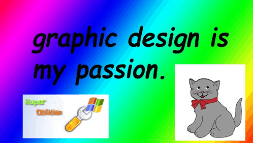

Olá! (leia com um tom bem animado e convidativo) Meu nome é Geysa e este é o meu singelo
blog pessoal: um cantinho com indicações de coisas que eu gosto — livros, filmes, séries, comidas e várias
aleatoriedades que aparecem do nada.
Te inteirando sobre o que está rolando aqui
O que é isso aqui?
Sabe quando você vai conhecer alguém novo ou está numa apresentação e precisa falar um pouquinho sobre você?
Tipo um “top 10 coisas que eu gosto”, só que com contexto, comentários desnecessários e um toque de caos?
Então: a ideia aqui é mais ou menos essa.
Tentando ser desenvolvedora (com dignidade variável)
Aprendizado e sofrimento estético
E, de quebra, isso me ajuda a praticar minhas incríveis habilidades de programação (nota de ironia fortíssima aqui).
Este blog é um projeto humilde, pessoal e totalmente feito para eu testar coisas, aprender e fingir que estou no controle.

Biografia não autorizada
Quem vos escreve
Agora que você já entendeu o espírito do projeto, deixa eu te contar quem é a pessoa que vos fala (ou melhor: que escreve).
Eu sou uma recém-adulta cujo lobo pré-frontal “terminou de assar” recentemente. (Cá entre nós: ainda acho que tá meio cru, mas tudo bem.)
Atualização do sistema: adulta
O lobo pré-frontal finalmente subiu
Tenho 25 anos e, de alguma forma, estou mais perto dos 30 do que dos 20 (insira lágrimas dramáticas aqui).
Brincadeira: eu até gosto desse limbo dos “quase 30”. Conforme o tempo passa, eu me sinto mais interessante —
e sinceramente, isso tem sido bem legal.
Nutro uma fé quase inabalável de que estou ficando pelo menos 1% menos esquisita tanto em aparência quanto em personalidade
(a esperança é a última que morre, né?).
Eu e a TI: uma relação séria
Computadores e eu: tentativas diárias
Eu estudo TI, esse universo de computadores e softwares e tals. À primeira vista pode parecer meio “do nada”, mas eu até que me viro bem.
Estou entrando no meu segundo ano (no momento estou de férias; as aulas voltam em fevereiro). E só pra deixar claro: este blog não é
trabalho da faculdade — é um estudo independente, por curiosidade e por diversão, e porque eu gosto de caçar sarna pra me coçar (ou seja lá o que isso signifique).
Listas inúteis que dizem muito (ou não dizem nada também)
migos, posso chamá-los assim?
Sabe uma coisa que eu gosto de fazer quando o tédio bate forte? (mesmo tendo coisa pra fazer, porque se eu pensar por dois segundos eu lembro das tarefas…
e decido, conscientemente, ignorar.)
Eu amo fazer listas. Com assunto definido ou sem assunto nenhum — só listas de “coisas que eu gosto por gostar”.
Assim vocês me conhecem um bocadinho mais.
Ficou confuso? (fui bem prolixa agora, né.) Calma: exemplo vindo aí.
Top de coisas (sem número definido porque eu não tô afim)
Café com canela sem açúcar (pode parar de me julgar — eu tô vendo a careta).
Livros com páginas amarelas e travessão nos diálogos (todo leitor vai concordar comigo aqui).
Bater as metas diárias que eu mesma coloquei no smartwatch (me sinto uma vencedora. muito fitness).
Assistir minha série conforto pela milionésima vez (com um docinho então… impecável).
Meias coloridas e divertidas (eu amo tanto as minhas que estão gastas de tanto usar, coitadas).
É isso. Essa sou eu — uma pequena parte (a parte que eu julgo apresentável) pra quem teve a coragem de clicar nesse projeto de blog.
Música
Trilha sonora do momento
O resto? Tá na aba “Playlist”.
Pra começar, vamos de música — até porque, neste exato momento, eu estou digitando freneticamente no teclado do meu notebook enquanto escuto
uma playlist excelente, obviamente de curadoria impecável (minha).